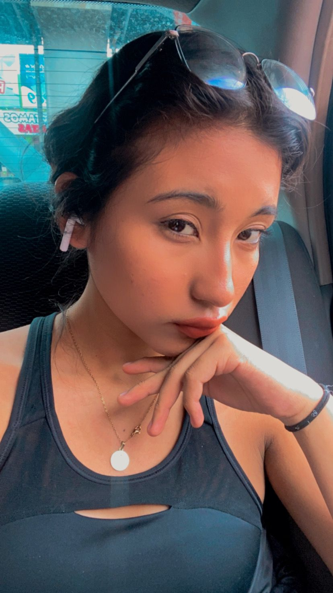

Soy estudiante de Ingenieria en Computacion en el Instituto Politecnico Nacional, me gane una beca en el programa de becalos tech challengue 2024 para mejorar mis conocimientos en cuestion al area de frontend, mi objetivo es mejorar tanto en lo personal como en lo profesional, ejercer mi carrera con mucho exito y trabajar arduamente, dedicandome al cien por ciento en mi labores.
